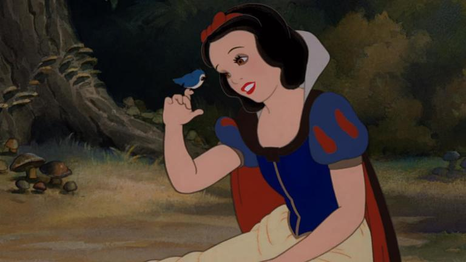
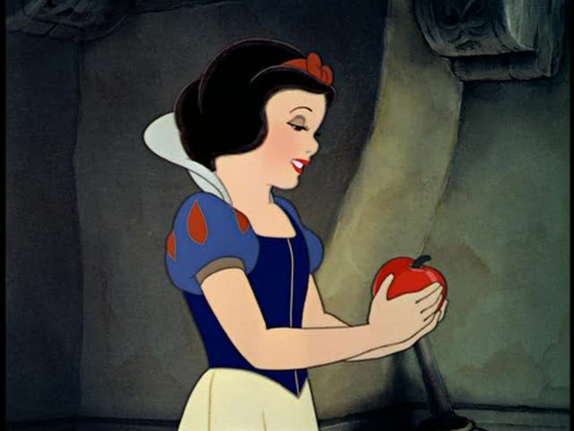
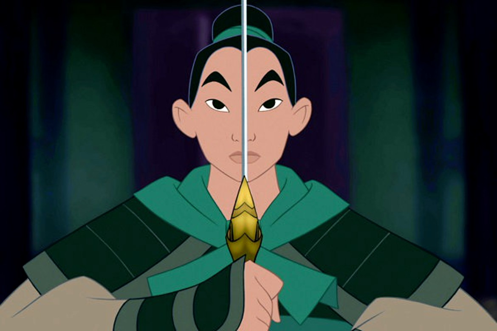
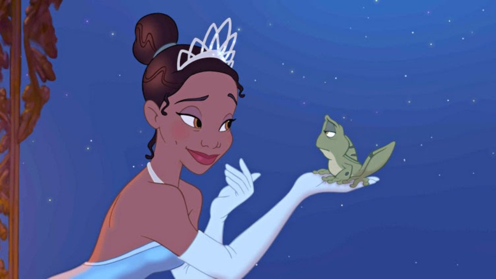
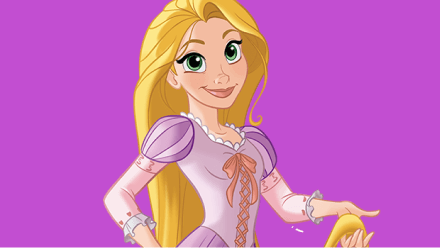
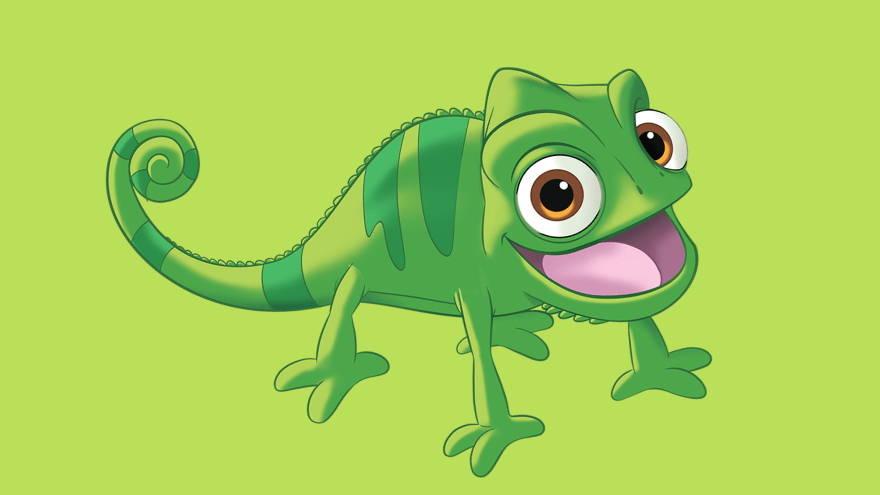
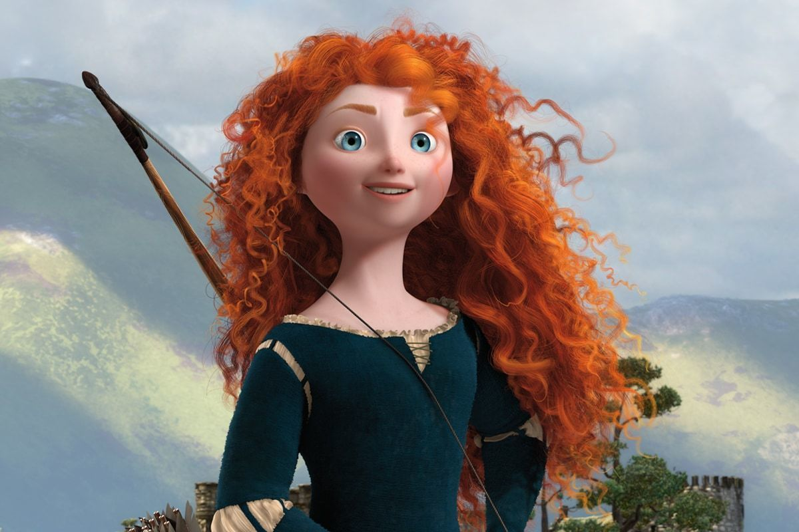
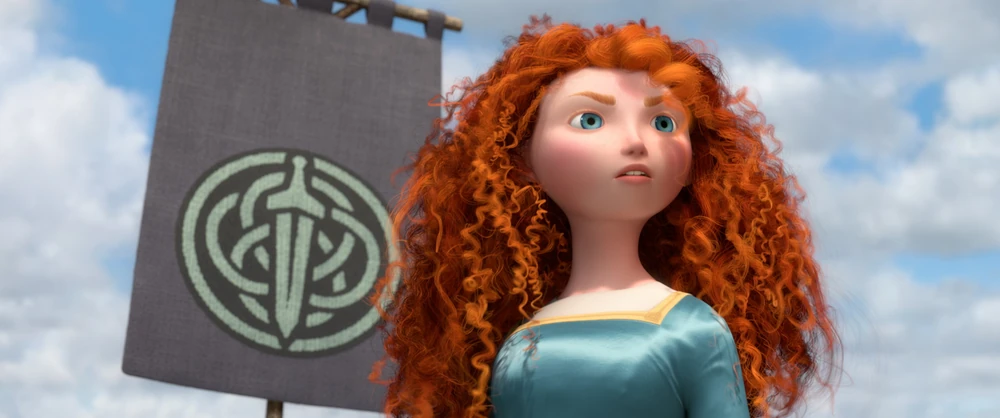
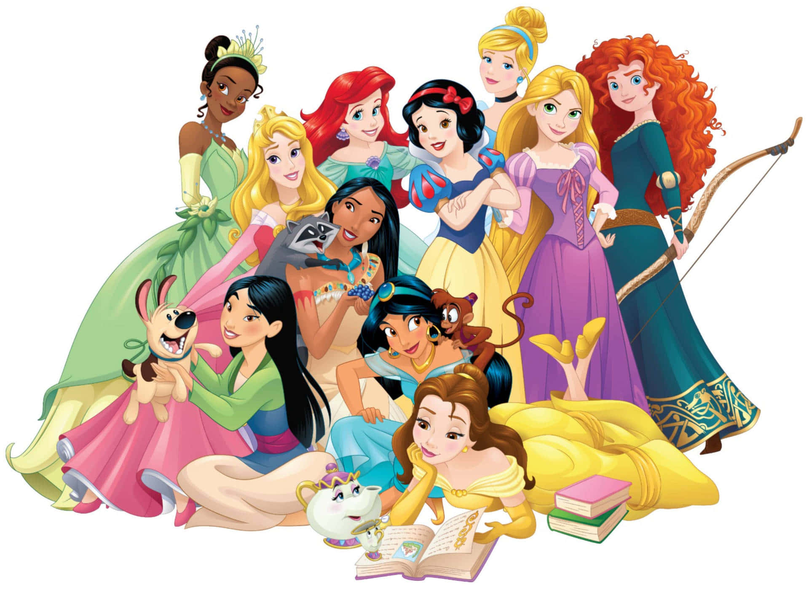
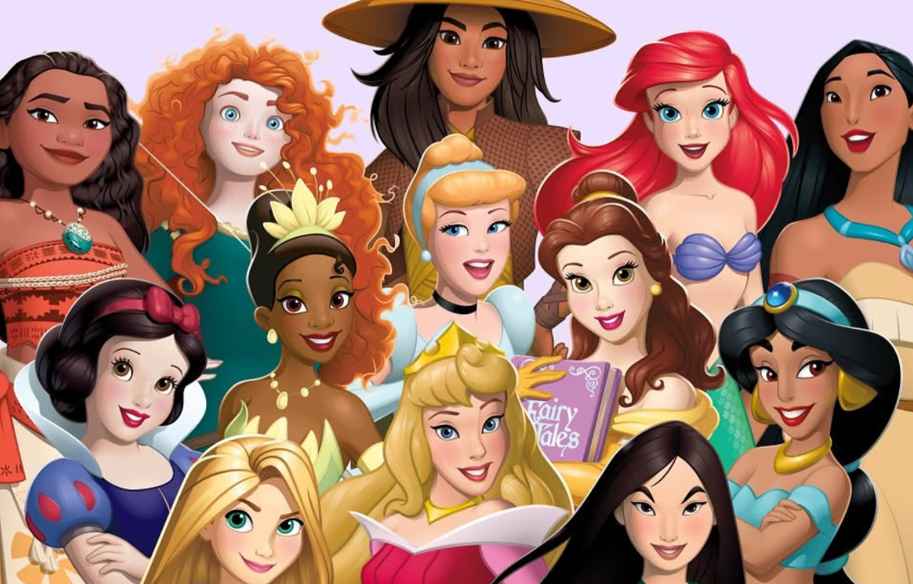

Branca de Neve foi a primeira princesa da Disney?

Verdade. Branca de Neve apareceu em 1937, no primeiro longa-metragem animado da Disney, tornando-se a primeira princesa da marca.

Branca de Neve foi a primeira princesa da Disney?

Verdade. Branca de Neve apareceu em 1937, no primeiro longa-metragem animado da Disney, tornando-se a primeira princesa da marca.
Elsa faz parte da linha principal Disney Princess?

Mito. Elsa é uma personagem muito famosa da Disney, mas normalmente é tratada dentro da franquia Frozen, separada da linha principal Disney Princess.

Mulan nasceu princesa?

Mito. Mulan não nasceu princesa e também não se casa com um príncipe, mas faz parte da franquia por sua coragem e importância.

Tiana foi a primeira princesa negra da Disney?
Verdade. Tiana, de A Princesa e o Sapo, marcou a história da Disney como a primeira princesa negra da franquia.
Moana tem forte ligação com o oceano?
Verdade. Moana é apresentada como uma jovem ligada ao mar, à navegação e à história de seu povo.

Rapunzel viveu a vida inteira fora da torre?

Mito. Em Enrolados, Rapunzel cresce presa em uma torre e sonha em conhecer o mundo fora dela.

Merida também faz parte das princesas da Disney?

Verdade. Merida vem do filme Valente, da Pixar, mas também aparece na linha Disney Princess.

Todas as princesas usam coroa o tempo todo?

Mito. Muitas princesas não usam coroa frequentemente, e algumas nem seguem o modelo tradicional de realeza.